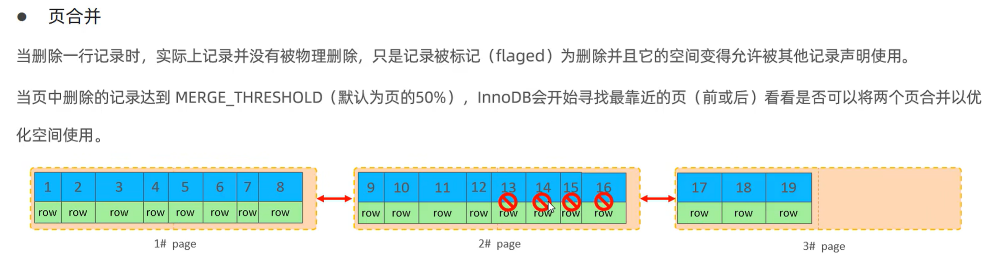

MySQL：（六）sql优化
前言
对于sql优化，必须掌握的知识：MySQL：（一）索引底层原理与实现 、MySQL：（二）存储引擎
一、插入数据
批量插入&手动事务
如果插入的数据是500-1000这个范围，可以使用数据批量插入的方式。那如果是几万条数据呢？那就使用多条数据批量插入语句。如果使用单条插入操作会多次建立与数据库的连接，性能肯定是比一次性连接的批量插入低的。
另外，InnoDB使用的是自动提交事务，每插入一次就自动进行事务的开启和关闭，因此可以手动控制事务，避免事务多次的开启和提交。
最后是主键顺序的问题。InnoDB使用的是B+树和双向链表，而B+树众所周知就是查的快，插入难，会导致页分裂等等问题。B+树如果按照主键顺序进行插入效率会高很多。
主键顺序可参考：
- 文章：MySQL：（一）索引底层原理与实现 中第四节：InnoDB B+树存储数据结构。
- 本篇文章第二节
总结一下：
- 批量插入
- 手动提交事务
- 主键按顺序进行插入
load指令
ok，下一模块。
如果插入的数据更大，数据来到了几百万的级别，那么使用insert的性能就不高了。
在MySQL中要涉及大量数据插入时，我们选择使用load指令进行大量数据批量插入操作：
1 | # 客户端连接服务端时，加上参数--local-infile |
插入的速度如图：
可以看到使用load指令插入数据花费的时间是16.84s。如果使用insert操作大概需要花费10+分钟。
使用load指令插入当然也是需要满足主键顺序插入的，和使用insert进行批 量插入时一样，原因是InnoDB底层都是使用B+树和双向链表（除了自适应哈希的情况，自适应哈希见文章：MySQL：（二）存储引擎 的内存架构）
总结一下：
- 批量插入数据
- 手动开启事务
- load指令输入大数据文件
二、主键优化
InnoDB逻辑存储结构&索引底层实现原理
在讲索引的底层原理的时候，我们说过InnoDB底层都是使用B+树和双向链表存储数据的。对于聚簇索引，在InnoDB中默认是主键索引，叶子节点存放的都是行数据，而非聚簇索引存放的都是主键索引的地址值，因此会有回表的情况：MySQL：（一）索引底层原理与实现
而在介绍InnoDB存储引擎的时候，也曾经说过InnoDB的逻辑存储结构：MySQL：（二）存储引擎
里面提到的页（page）是InnoDB磁盘管理的最小单元，一个页的大小为16kb。在B+树的结构中，每个节点都是一个页，页里面就包含多条行数据。换句话说，非叶子节点对应的页负责分发索引，叶子节点对应的页负责存储具体行数据。
页分裂
B+树是要求主键顺序的，这里不多说了，我们就直接讨论主键乱序插入的情况。
现在我要将主键为50的数据插入到页中，由于要求顺序，这条数据不会直接被开辟到新的page空间，而是按顺序从根节点开始，找到叶子节点中应该插入的位置
但是此时page1的空间已经满了，此时怎么办？
此时需要开辟新的page空间，这里就叫page3，InnoDB会尽量平均分配两个页的空间利用，将数据进行迁移。这里就是将page1的行数据迁移到page3中。
接下来，主键为50的行数据，就应该拼接在page3后面。
最后就是，页之间的链表关系重排序，重新设置链表指针。
OK，以上就是页分类的流程。主键乱序插入的时候就有可能会产生页分裂的现象，并且页分裂也会消耗比较大的性能。
页分类导致的问题
1. 性能下降
- 增加I/O操作：页分裂需要创建新的数据页，并将原页中的部分数据移动到新页中，这增加了磁盘的I/O操作次数。磁盘I/O通常是数据库操作中的瓶颈，因此页分裂会直接影响查询和更新操作的性能。
- 降低缓存效率：数据库系统通常会将数据页缓存在内存中以提高访问速度。页分裂会导致缓存中的数据页失效，因为新生成的数据页需要重新加载到缓存中。这降低了缓存的命中率，进而影响了数据库的整体性能。
2. 空间利用率降低
- 空间浪费：页分裂后，原数据页和新数据页可能都无法完全填满，导致空间利用率降低。在某些情况下，空间利用率可能会降低约50%（如参考文章1所述），这取决于数据的具体分布和页分裂的触发条件。
- 碎片化：频繁的页分裂会导致数据库中的数据页变得碎片化，即数据不再连续存储在磁盘上。这会增加读取数据时的寻道时间和I/O操作次数，进一步降低性能。
3. 索引重构
- 索引失效：在某些情况下，页分裂可能会导致索引失效或变得不连续。这会影响基于索引的查询操作的性能，因为索引无法快速定位到目标数据页。
- 重建索引：为了恢复索引的连续性和性能，可能需要定期重建索引。然而，重建索引本身也是一个资源密集型的操作，它会占用大量的CPU和I/O资源，并可能影响数据库的在线性能。
总结一下：增加磁盘io，降低缓存效率，空间产生碎片，索引重构。
页合并
页分裂是插入数据时的问题，而页合并是删除数据的现象。

如果将主键为：13,14,15,16的行数据进行逻辑删除，那么page3的数据将会迁移到page2
主键设计原则
根据页分类的现象总结出四点：

原则都是围绕避免出现页分裂的情况进行设计的。
三、order by优化
对于单个主键索引，如果排序走索引，order by升序或者降序都不会有性能差异，都是using index。
接下来讲联合索引的情况：
1 | # 假设tb_user表中存在字段：id，name，age，phone。现在对gae字段创建索引 |
如果按照两个字段进行排序：
1 | select id, name, age from tb_user order by age, phone; |
此时也会走using index
如果两个字段同时倒序排序：
1 | select id, name, age from tb_user order by age desc, phone desc; |
可以看到backward index scan。这是倒序的索引扫描，效率也是高的。
之前讲过联合索引的B+树会依次按照主键顺序进行比较，例如这里，age相同的话再比较phone，phone更大的值最终将在叶子结点右边。因此联合索引都是有序的。倒序也就是正序反过来，没差的。
如果一个字段正序，一个字段倒序：
可以看到，已经出现using filesort了。
为什么会这样呢？
原因是因为索引其实也是有一个字段标记顺序的：
如果索引创建方式是这样：
1 | create index inx_user_age_phone on tb_user(age asc,phone desc); |
查看索引的时候可以看到，我给phone字段添加倒序的索引。
此时一正序一降序的问题就可以得到解决：
原因就是创建倒序索引了以后，一正序一倒序的查，就可以直接拿到数据了
总结一下：
- 排序的时候走索引效率高。
- 排序的时候可以走普通索引提升效率。
- 合索引要么排序只用第一个字段（最左前缀），要么多个字段共同升序降序，又或是按照排序方式添加联合索引。
前提都是查询走了索引，否则不生效。
四、group by优化
group by优化主要是索引对分组的影响。
1 | # 创建索引 |
很简单，联合索引满足最左前缀原则就行了。
五、limit优化
使用limit的时候，越往后面的页花费时间越多。由于在finalshell里打印结果的篇幅原因，我就不放上图片了，这里直接给出运行结果：
1 | select conut(*) from tb_user; # 表中存在1000000条数据。 |
原因是什么呢？很简单，这样查询需要回表。
对这个的解决方案，官方给出的方式是覆盖索引 + 子查询。
覆盖索引是指一个索引包含了所有需要查询的列，即查询语句中的SELECT字段全部在索引中，通过索引就可以直接获取查询结果，而无需回表查询数据行。
什么意思呢，我们来看看
首先我们进行select * ...操作，肯定是要回表的，而且在上面讲了查询效率很低，随着往后查询的数据越大，时间花费越多；但是如果我先查询 id 作为子结果集，然后再查询id对应的数据是不是就行了呢？
1 | # 第一步，查询id,这一步就是使用覆盖索引id（因为我没创建其他索引，默认只有主键索引），作为子查询的结果集 |
然而这样的sql报错语法问题，不允许in关键字中有limit。
但是我们可以将子查询作为一个表做多表联查：
1 | select * from tb_user as a , (select id from tb_user limit 900000,10) as b where a.id = b.id |
可以看到结果还是很快的，用了11.46S
总结一下：
limit采用多表联查的方式，结合覆盖索引（id）+ 子查询做优化，解决数据页靠后时查询速度显著下降的问题。
六、count优化
七、update优化
首先你得先复习一下mysql的行锁：MySQL：（三）全局锁、表级锁、行级锁
在dml语句中，mysql的行锁是自动添加的，并且不走索引的情况下，行锁会升级为表锁。
还是之前的表 tb_user 和字段 id,name,age，id为主键。现在有两个线程，分别是线程A和线程B。
1 | +---------+------------+-------+ |
场景一
线程A先执行操作：
1 | mysql> begin; |
线程B此时也开启事务：
1 | mysql> begin; |
此时线程B可以修改成功吗？
可以的，现在A修改的是 id = 1 的数据，而B改的是 id = 2 的数据，行锁不冲突。两个线程之后各自提交事务就行了。
场景二
线程A先执行操作：
1 | mysql> begin; |
线程B此时也开启事务：
1 | mysql> begin; |
此时线程B可以修改成功吗？
不可以，因为现在是表锁而不是行锁，事务 B 会被阻塞。
为什么现在是表锁不是行锁？事务 B 为什么被阻塞？？？？
因为我们曾经说过，如果不走索引的话，行锁是会失效的，因为行锁是 innodb 基于B+树来实现的。而现在表中只有主键索引 id ，而没有 age 对应的索引。
总结一下：
我们在更新数据的时候，需要根据索引进行 update 操作，否则在多个线程甚至是高并发的情况下，行锁有可能会升级成表锁
总结
insert：对于大量数据的插入，应该结合手动开启事务，进行批量插入以减少和数据库连接的多次开启；并且按照主键进行插入。对于更大的数量级，采用 load 指令插入数据，这些数据需要统一格式。
主键优化：围绕避免出现页分裂的问题展开，比如按主键顺序插入数据、避免对主键修改。
order by：排序问题。单一字段排序时走索引；覆盖索引的情况：如果单一字段，using index；如果多个字段排序，需要满足最左前缀原则。查询的多个字段都有索引时，索引的排序要统一（即都是正序索引或者都是倒序索引），否则可以考虑建立一正序一倒序的覆盖索引。
覆盖索引关注的是索引是否包含了查询所需的所有列，而联合索引关注的是索引是否同时包含了多个列。一个索引可以是覆盖索引但不一定是联合索引（如只包含一个列的索引且该列满足查询需求），也可以是联合索引但不一定是覆盖索引（如包含多个列但查询还需要其他列的数据）。
group by：分组的字段索引满足最左前缀原则或是主键索引。
limit：覆盖索引 + 子查询的方式优化全表往后扫描时速度非常低的问题。为了解决 in 中不能使用 limit 的问题，使用子查询作为表的形式进行多表联查。
count：默认使用 conut（*）的形式就是速度最高的。因为innodb只能累加，而MyISAM可以在磁盘中直接取conut的值。
update：更新的where条件中，字段需要有对应索引，避免多线程的情况下，表锁降低性能。